PaperWeekly 第三期
引
历经半个月时间终于发布了新一期PaperWeekly，大家久等了。在这个半个月里，PaperWeekly发生了一些明显的变化。维护和运营从我一个人变成了一个十人左右的团队来一起做，小伙伴们来自全球各地，颠倒着黑夜和白天进行沟通。团队中的每个人都有一颗热爱知识和分享知识的心，都认为分享是一种美德，是一种付出，更是一种回报。可能我们不完美，但我们相信我们正在追求完美的路上坚定地走着。
有了更多的同学加入，PaperWeekly会更加多元化，不再受限于我个人感兴趣的方向和阅读、写作习惯。PaperWeekly会坚持每周发布一期文章，每一期的文章尽量围绕同一个topic展开，在微信公众号、官方微博和知乎专栏会同步更新，除了这一篇文章，我们还会坚持在微博上提供一个新的服务，cs.CL daily，帮助大家过滤掉arXiv cs.CL上比较水的paper，留下质量高的paper，并且用简评的方式分享在微博上，每周末会更新一篇cs.CL weekly出来，将一周值得读的cs.CL paper汇总发布。
PaperWeekly组织了一个高质量的NLP讨论群，只要有你相关的问题，群里的高手会第一时间站出来解答或者讨论你的问题，有的时候会给出一些开源code和相关的paper，提问者、讨论者和潜水者都会有很大的收获。分享paper导读的意义在于讨论，大家一起来讨论，才能更加充分地吸收paper里的营养，这也是我为什么组织一个讨论群的原因。
寒暄的话就说到这里，本期分享的topic是ACL 2016，一共10篇文章，涉及的内容包括：Logic Form、NMT、Summarization、QA、Chatbot等。
Sentence Rewriting for Semantic Parsing
关键词
Semantic Parsing、Sentence Rewriting
来源
ACL 2016
问题
语义分析的表现形式是将自然语言（natural language）转化成逻辑形式（logic form）。因语言表达多样性的问题导致两者间存在mismatch problem。
文章思路
先给出一个语义分析的例子：
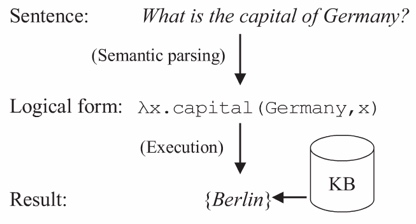
给句子换个表达（How many people live in Berlin?），对应的逻辑形式就变得复杂很多(count(λx.person(x)∧live(x,Berlin)))。
作者认为，原句子和逻辑形式之间存在的结构不匹配导致了语义分析的困难，而结构不匹配的核心是词汇的不匹配。作者率先提出先把句子重写再转成目标逻辑形式的语义分析方案，如下图：
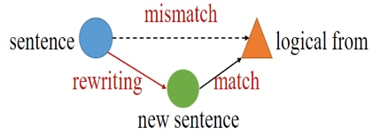
针对词汇不匹配问题的两种情况分别给出基于字典和基于模板两种方法。
1）问题一：1-N mismatch
是指一个单词（word）对应一个复合的逻辑形式（compound formula）。
例如daughter对应 child ∩ female。但在开放域的知识体系下，制定这些规则十分困难。于是作者提出将句子中的常用名词替换为字典（Wiktionary）中的解释，比如先把刚才的daughter转换为female child，接着再转换为逻辑形式child ∩ female就十分自然了。
2）问题二：N-1 mismatch
是指将复杂的自然语言表达对应为单个逻辑表达。
例如将How many people live in Berlin?转化为λx.population(Berlin,x)的分析过程中，How many people live in被对应为逻辑式常量population。如同问题一，这样的规则实在过多，作者的思路是将复杂的表达式转化为简单的形式。
沿用之前的句子来了解算法流程。
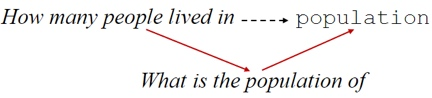
Step 1 替换实体生成候选template，例如得到模板how many people live in #y。
Step 2 检索template pairs来替换模板，例如找到(a：how many people live in #y, b：what is the population of #y)的模板对，于是将b作为新模板，
Step 3 把实体替换回去得到容易生成逻辑形式的what is the population of Berlin。
相关工作
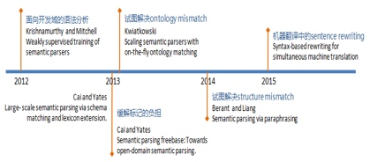
简评
如今深度学习在自然语言处理领域大红大紫，也给语义分析的方法带来更多的思考。比如ACL2016另外一篇文章Language to Logical Form with Neural Attention，就把语义分析转换为seq2seq问题，进而使用深度学习的方法来解决。如果我们把词向量这样的表示形式比喻为粗糙的连结主义，那么逻辑表达就好比精细的形式主义。两者各有优势，希望以后会有更多结合两种思想的工作出现。
Language to Logical Form with Neural Attention
关键词
Logical Forms, Sequence to Sequence
来源
ACL 2016
问题
如何把自然语言转化成Structured Logical Forms？
文章思路
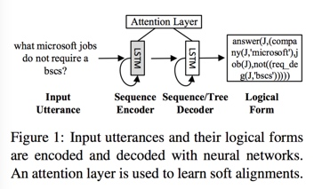
模型总体是一个encoder-decoder架构，input sequence首先通过LSTM encoder转化成一个vector，然后这个vector通过LSTM decoder被转化成Logical Forms。在decode过程中用到了一个attention layer去获取context信息。
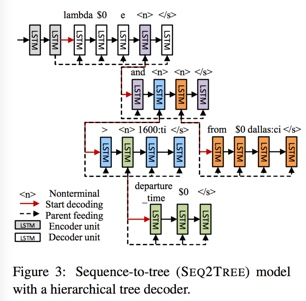
和encoder-decoder模型类似，作者提出了一种hierarchical decoder。与普通的decoder不同，首先，decode之后的sequence中存在一个特殊字符
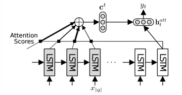
作者还使用了一种attention机制，在构建current hidden state的时候将hidden state与所有encoder中的hidden state进行对比，给每一个encoder hidden state一个weight。
资源
代码：https://github.com/donglixp/lang2logic
Jobs和GEO数据集：http://www.cs.columbia.edu/~mcollins/papers/uai05.pdf
相关工作
之前的大部分工作都采用一些parsing models，string-to-tree transformation rules，文中没有提到之前有人采用seq2seq/deep learning的方法。本文中使用的seq2seq方法主要来自Kalchbrenner, Blunsom, Cho, Sutskever 在machine translation中提出的模型。
简评
本文解决的是一个非常有趣的问题，将自然语言转换成结构化的Logical Forms。试想如果此模型能够很好的解决这个问题，那么将来的各种query language甚至programming languages都可以由自然语言转换而成。
Neural Summarization by Extracting Sentences and Words
关键词
Summarization、Hierarchical Document Encoder、Attention-based Extractor
来源
ACL 2016
问题
如何使用数据驱动的方法来做提取式摘要？
文章思路
本文针对的任务分为sentence和word两个level的summarization。sentence level是一个序列标签问题，每个句子有0或1两个标签，为1表示需要提取该句作为总结。而word level则是一个限定词典规模下的生成问题，词典规模限定为原文档中所有出现的词。
使用的模型也比较有特点，首先在encoder端将document分为word和sentence来encode，word使用CNN encode得到句子表示，接着将句子表示输入RNN得到encoder端隐藏层状态。从word到sentence的encode体现了本文的hierarchical document encoder的概念。
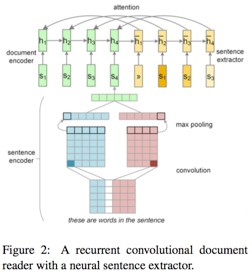
在decoder端根据任务的不同使用不同网络结构，sentence任务就是一个简单的有监督下二分类问题，使用RNN网络结构更新decoder端隐藏层状态， decoder端隐藏层状态串联encoder端隐藏层状态后接入一个MLP层再接sigmoid激活函数得到句子是否被extract的概率。
word任务则是使用传统的attention-based的方法来计算每个词的概率。但要注意本文的计算的attention不是word-level attention，而是encoder端sentence-level attention。
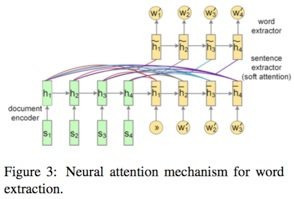
资源
数据集：http://homepages.inf.ed.ac.uk/s1537177/resources.html
相关工作
之前大多数extractive methods都基于human-engineered特征来给句子建模，通常会对每个句子计算一个分数，然后再使用诸如binary classifiers，hidden Markov模型，graph-based算法或integer linear programming等方法来选择句子构成总结。
简评
之前基于data-driven的seq2seq模型在abstractive summarization任务上大放异彩，本文提出了使用类似的模型来解决extractive summarization任务。不过针对的依旧是single-document summarization任务，未来需要将工作拓展至multi-document summarization任务上。
Sequence-to-Sequence Generation for Spoken Dialogue via Deep Syntax Trees and Strings
关键词
Sequence to Sequence、Natural Language Generation、Chatbot
来源
ACL 2016
问题
如何通过小规模、未对齐语料生成对话语句？
文章思路
作者介绍了两个模型:
1、通过DA(diglogue acts)生成句法依赖树，再利用external surface realizer，生成语句。（如下图）
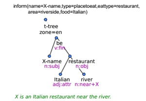
2、将两部分结合起来，直接生成语句。步骤如下：
Step 1 将DA(dialogue acts)中的每个slot(表示特定信息)表示成三元组(DA type,slot,value)并结合(下图左)
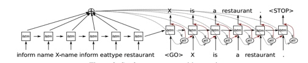
Step 2 基于seq2seq generation technique生出语句或句法依赖树。
Step 3 结合beam search和n-best列表重排序（list reranker）以减少输出中的不相关信息。
资源
代码: https://github.com/UFAL-DSG/tgen
相关工作
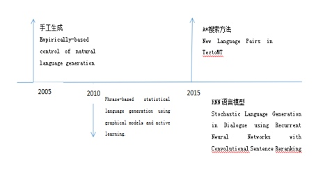
简评
该方法基于广泛使用的seq2seq模型，可以用未对齐的MR对(pair of meaning representation)和句子进行训练，且只要小规模的语料就可以有很好的效果。生成器可以从数据中学会slot的对齐和值，生成流利的domain style)语句，虽然语义错误还是很频繁，但还是取得了不错的成绩。
On-line Active Reward Learning for Policy Optimisation in Spoken Dialogue Systems
关键词
Dialogue System、Reinforcement Learning、Online Active Reward Learning
来源
ACL 2016
问题
文章提出一种在线学习框架，通过高斯过程分类模型进行主动学习，训练对话策略和奖励模型，减少数据标注的花费和用户反馈中的噪声。
文章思路
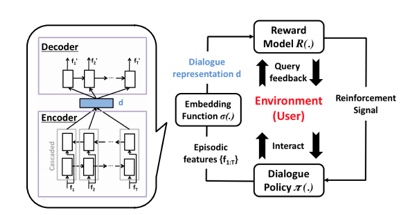
框架分为三部分：对话策略、对话嵌入函数、用户反馈主动奖励模型。
无监督学习输入为双向LSTM，通过Encoder-Decoder模型表征用户意图，将对话的成功与否看做高斯过程的一个二元分类问题，当模型对当前结果不能评判时，主动学习，通过reward模型决定是否询问用户反馈，当模型不确定时，生成增强信号来训练策略。
资源
数据集：http://camdial.org/~mh521/dstc/
相关工作
1、之前的工作有用任务完成度和对话持续情况做Reward，但任务完成度不好衡量
2、用协同过滤表征用户偏好
3、用逆强化学习从行为中推出reward
简评
用lSTM Encoder-Decoder表征用户意图，无需大规模标注语料和构建用户模拟器来进行训练，在较小的训练语料中取得了不错的效果，率先实现了在真实场景中的应用。但Reward函数只关心对话任务是否成功，模型过于简单。
Achieving Open Vocabulary Neural Machine Translation with Hybrid Word-Character Models
关键词
Neural Machine Translation、UNK Words
来源
ACL 2016
问题
如何解决机器翻译中的未登录词问题？
文章思路
文章提出了一个混合（层次）模型。该模型由两部分组成，分别为：
a. 传统的基于词（word level）的seq2seq模型；
b. 基于字母级别（character level）的LSTM模型，由一个将字母encode成单词的encoder和一个根据状态生成低频词的decoder组成。其中a部分负责进行翻译，b部分负责处理低频词（unk）。
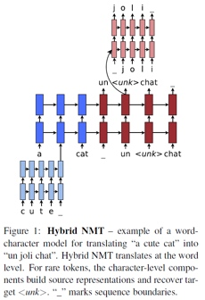
具体地，a部分的encoder遇到unk时，会使用character level对该低频词进行encode，并使用encode出的representation作为输入。而decoder遇到unk时，会利用attention机制将当前上下文和LSTM状态初始化character level decoder。此处的初始化采用的是文章提出的separate path模式，即利用一个MLP作为character level decoder的初始化网络。值得注意的是此处word level decoder仍会选择用
相关工作
Unk问题属于NMT中长期存在问题。目前多是采取后处理的方法。今年ACL有两篇paper，分别是李航老师实验室的copynet和Bengio实验室的pointing the unknown words，但对机器翻译任务参考意义有限。
另外一种思路则是加大词典，比较知名工作有On Using Very Large Target Vocabulary for Neural Machine Translation。此外该工作还借鉴了Jiwei Li的hierarchical auto encoder。
简评
文章思路新颖且简单明了。因为NMT中存在unk的问题，作者直接利用character level RNN来生成一个词替代unk。该工作对拼音文字有一定意义，对中日韩文的参考意义有限。
Pointing the Unknown Words
关键词
Neural Machine Translation、UNK Words
来源
ACL 2016
问题
如何解决机器翻译中的未登录词问题？
文章思路
作者在有注意力的机器翻译模型上增加了一个开关来判断和是否复制原文。
1、Attention-based机器翻译模型
经典的attention model这里不再赘述。
2、Pointer Softmax模型
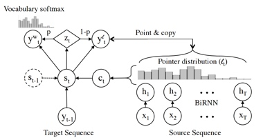
两个问题有待解决解决：
a. 是否进行copy？
b. copy的位置在哪？
先说第二个问题，作者先引入shortlist softmax和location softmax。前者来确定要从shortlist中选取哪一个单词作为输出，后者确定在哪个位置要进行copy操作。
再看第一个问题，作者引入一个二值变量（可以想象为一个开关）来选择使用shortlist softmax还是location softmax。当值为1的时候不进行copy操作，使用shortlist softmax来从shortlist中选一个词作为输出。当值为0的时候进行copy操作，使用location softmax，将原文的词直接copy到指定位置。
资源
代码：https://github.com/caglar/pointer_softmax
简评
本文的想法很有趣，直接从原文照抄罕见词和未知词很符合日常生活中人类的处理方法。从文中实验结果来看，该模型有一定的提升效果。注意力模型的提出与对人类行为的观察密不可分，而copy机制也是从生活中提炼出来的一种有效模型，我们可以借鉴的是从人类解决问题的具体方式中进行总结和归纳不失为一种有效的解决方案。
Harnessing Deep Neural Networks with Logic Rules
关键词
CNN、RNN、First-order Logic, Iterative Distillation Method
来源
ACL 2016
问题
如何将深度学习与逻辑规则结合使用？
文章思路
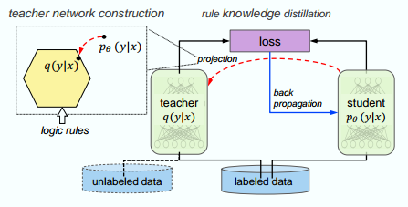
系统在构建正常神经网络(student)的同时，构建了一个基于逻辑规则的训练网络(teacher)。整个网络的目标还是优化神经网络的参数变量 θ，因为新的目标损失函数结合了二者的损失，通过这种方式，教师网络的逻辑信息就能够被转移到神经网络的θ上，从而加强神经网络的性能。 在这种结构里逻辑规则是用于辅助的可选项，通过调整权重，系统可以偏向某个网络。这种模型可以将监督学习扩展到无监督学习，比如图示中，无标记的数据通过教师子网之后提取有用信息，也可以用来训练监督学习的神经网络。
1、训练过程
假设输入数据为x, y。student神经网络的参数变量是θ, 输出层是softmax，对输入xn，输出预测概率分布σ(xn)。对teacher网络，在第ｔ次迭代中基于逻辑规则的预测结果表示为sn(t)，那么新的优化目标变成了
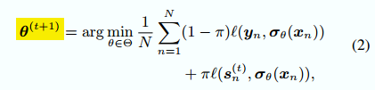
可以看出来自教师网络的反馈作为regularization加到了目标函数里，通过这种方式两个网络的信息就结合在了一起。注意教师网络在每次训练迭代中都要构建，因此整个过程被称之为iterative knowledge distillation.
2、教师网络
教师网络使用软逻辑(soft logic)来编码first-order logic的信息。soft logic在[0,1]之间的连续取值，而不是二元值{0, 1}。逻辑运算也用max, min, sum代替原来的与或非。
神经网络数学模型为pθ(y|x) 教师网络数学模型假设为q(y|x)。我们实际上是用基于逻辑规则的教师网络来模拟神经网络输出，因此我们希望能找到一个最优的q，使得输入尽可能满足逻辑规则的要求，同时q要尽可能接近pθ。详细推导可以参见原文，最后的优化结果就是
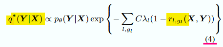
λl 是每个规则的自信度(confidence)，而rl, gl 是某个规则应用于某一输入时的逻辑结果，介于0,1之间。可以看到自信度比较高的规则可以使输入更容易通过规则。
3、应用
a. 基于CNN的情感分析
b. 基于BLSTM-CNN的NER任务
相关工作
1、Neural-symbolic systems (Garcez et al., 2012) 从给定的规则构建推理网络
2、(Collobert 2011)， 利用领域知识domain knowledge提取额外特征，增强原始数据
3、Knowledge distillation (Hinton et al., 2015) (Bucilu et al. 2006)
4、Posterior regularization (PR) method (Ganchev et al., 2010)
简评
创新点在于将逻辑规则与神经网络结合，可以利用人已知的知识去引导机器学习。当数据量不足的，或者对数据进行补充时，可以将人类的知识用逻辑语言表达出来，然后通过本文提出的框架进行增强训练。本文的两个例子中都提到只用了少量规则，优化的结果虽然显示要比当前其他模型好，但是没有大幅度的提高。需要进一步验证如果使用更多的规则，能不能大幅度提高准确率。
Easy Questions First? A Case Study on Curriculum Learning for Question Answering
关键词
Curriculum Learning、Self-paced Learning、Question Answering
来源
ACL2016
问题
文章讨论了Curriculum Learning在NLP领域, 尤其是在QA task里应用的可行性。
文章思路
文章首先对QA类型的task给出了比较general的定义: 我们可以把QA问题看做是一个经验风险最小化(ERM)问题, 我们需要最小化:
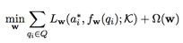
其中是a正确答案, f是给定背景知识以及问题, 模型选择出的最佳答案,Ω是regularizer.
之后, 作者对于Curriculum Learning, 尤其是Self-paced Learning做了介绍, 并且将其引入QA task, 进而将之前的ERM问题变为:

其中v是对问题进行采样时候的权值, g是self-paced regularizer, 其中λ代表’age’, 或者说’pace’. 训练初期, 模型趋向于对简单的问题进行训练, 而随着’age’的增加, 模型越来越多地加入更复杂的问题一起训练。
文章给出并分析了四种流行的self-paced regularizer如Table 1:
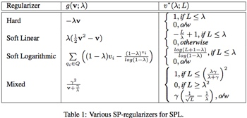
之后提出了7种新的heuristics:
1) Greedy Optimal (GO): 将已有的Q和一系列新的Q一起训练, 选回答正确并且loss最低的。
2) Change in Objective (CiO): 将已有的Q和一系列新的Q一起训练, 选择令loss改变最小的。
3) Mini-max (M2 ): 当某个新的Q与其loss最大的一个candidate answer配对时, loss最小的. (通俗地讲, 就是最差情况都没有那么糟糕的一个)。
4) Expected Change in Objective (ECiO): 只拿新的Q训练, 和之前的loss改变最小的. (相比于第二种的将已有的Q和新Q一起训练)。
5) Change in Objective-Expected Change in Objective (CiO - ECiO): 2)和4)的值最接近的, 按照作者的意思, 这个值反应了model见到某个新Q时surprise的程度。
6) Correctly Answered (CA): 将一系列新Q在当前model上测试, 选择用最小的loss正确回答的。
7) Farthest from Decision Boundary (FfDB): 只用在latent structural SVMs上, 选择答案与decision boundary最远的一个新Q。
资源
MCTest: http://research.microsoft.com/en-us/um/redmond/projects/mctest/
Science Textbook: http://http://www.ck12.org/
Science question answering: http://aristo-public-data.s3.amazonaws.com/AI2-Elementary-NDMC-Feb2016.zip
Simple English Wikipedia: https://dumps.wikimedia.org/simplewiki/20151102/
QANTA: https://cs.umd.edu/~miyyer/qblearn/
相关工作
1、Curriculum Learning:
早在1958年[1], 就有认知科学的相关学者意识到, 对于人类学习过程, 相对于提供随机的知识,由浅及深的地给予有计划的训练样本, 可以得到更好的效果. 之后这一Curriculum Learning的想法也被引入到机器学习中[2], 其中Self-paced learning (SPL)[3][4][5]是比较常用的方法。
2、QA:
Jurafsky和Martin[6]对于QA系列问题有一个非常好的叙述, 而这篇文章突出讨论Curriculum Learning在non-convex的QA模型上的应用, 着重介绍了基于配对的模型[7][8][9]和基于深度学习的模型[10][11].
基于配对的模型将每一个问题和问题附带的多个备选答案组成若干个QA对, 我们称之为假设, 然后在给定相关文章的情况下, 寻找有最可能是正确的一个假设作为答案. 基于深度学习的模型可以使用依赖关系树结构的递归神经网络, 对句子level的QA模型的结果取平均[10]; 也可以用RNN构建”长期”存储器, 通过学习对存储器进行读/写操作, 模拟一个动态的知识构建过程[11]。
简评
在QA task中引入Curriculum Learning旨在在训练过程中, 启发式地对于提供给模型的数据出现的顺序进行一些调整, 从而让模型从简单的, 易于学习的样本开始, 随着模型对数据的表述愈加成熟, 逐渐加入更复杂的样本. 理想状况下这会指导模型从得到一个普通的local minima, 变成得到一个”更”好的local minima, 进而利用全部数据得到一个”更更”好的local minima。
通常来说, 我们给予模型的heuristic并不一定能够真正帮助模型, 因为通常我们都在猜测数据以及模型的latent representation是什么, 但是这篇文章通过了一系列的实验验证, 本文阐述的heuristic确实可以帮助QA model获得更好的准确率. 这证明了引导模型由浅及深的这种思路是可行的, 我们也许可以思考一些更复杂的heuristic, 或者将其应用到其他的一些NLP tasks。
然而本文给出的大部分heuristic在新问题的选择上都需要比较大的时间复杂度, 对于类似MCTest这种总共只有660个文章的小型数据集来说还算比较现实, 但是对于更大更长的数据集(比如CNN数据集, 38万个文章, 很多文章都超过了一千五百个单词, 而且备选答案数量也远超MCTest的四个)时, 就显得不那么轻松了. 最简单的Attention Sum Reader[1] 在CNN数据集上, 每个epoch都需要10个多小时, 就更别说其他基于AS Reader的模型了。
总体来说, 相对于实用性, 这篇文章更多在于提供了一种新的思路, 也就是把Curriculum Learning相关的概念应用到QA乃至于其他NLP task中, 非常值得思考, 因此是一篇非常值得阅读的文章。
The LAMBADA dataset:Word prediction requiring a broad discourse context
关键词
Machine Reading Comprehension、Dataset
来源
ACL 2016
问题
构建了一个难度更大的机器阅读理解数据集。
构建思路
以Book Corpus的小说作为数据源，构建了10222个passages，每个passage包括平均4.6句话的context和相邻着的一句target，定义的任务是通过理解context来预测target中最后一个词，平均每个passage包括约75个tokens。其中，超过80%的passage context中包括了target中需要预测的词，48%的target words是专有名词（proper nouns），37%的词是一般名词（common nouns），约7.7%的是动词。这里，专有名词和一般名词是最难猜出来的，动词有一定的概率可以不需要context，而直接从target sentence利用语言模型猜出来。
在处理原始数据时，作者做了一层过滤，将容易从target sentence中直接猜出target word的passages统统丢掉，将剩下的部分放在众包网站上进行人工筛选，筛选的过程比较长，目的是让留在数据集中的数据有下面的效果：通过分析passage的context可以给出正确的target word，而如果只是给定target sentence的话，是猜不出正确的target word。
资源
本文数据集Lambada dataset: http://clic.cimec.unitn.it/lambada/
众包网站Crowdflower: http://www.crowdflower.com/
原始数据集Book Corpus: http://www.cs.toronto.edu/~mbweb/
CNN/Daily Mail dataset: https://github.com/deepmind/rc-data
CBT dataset: http://fb.ai/babi/
MSRCC dataset: https://www.microsoft.com/en-us/research/publication/the-microsoft-research-sentence-completion-challenge/
相关数据集
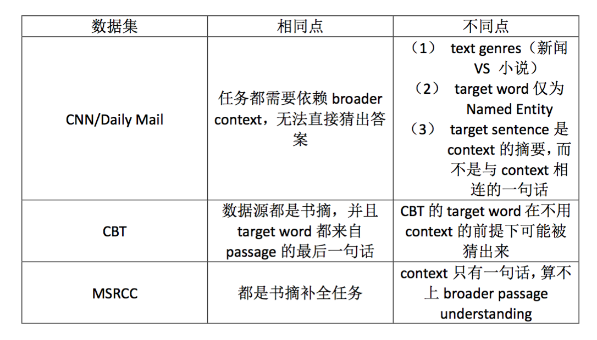
简评
大型数据集是深度学习技术发展的重要基础，数据集的质量和难度也直接关系着模型的质量和实用性。机器阅读理解的数据集有很多，包括中文和英文的数据集，每一个的构建都会带来模型的创新，随着难度不断增加，对模型也提出了更高的要求。本文在构建数据集过程中为了保证任务的难度所采取的方法是值得借鉴的。
致谢
本期的10篇文章由以下同学完成：
苏辉、Xiaoyu、胡小明、赵越、周青宇、韩晓伟、Eric Yuan、Zewei Chu、tonya、张俊。
感谢大家地辛勤付出。
广告时间
PaperWeekly是一个分享知识和交流学问的民间组织，关注的领域是NLP的各个方向。如果你也经常读paper，也喜欢分享知识，也喜欢和大家一起讨论和学习的话，请速速来加入我们吧。
微信公众号：PaperWeekly
微博账号：PaperWeekly（http://weibo.com/u/2678093863 ）
知乎专栏：PaperWeekly（https://zhuanlan.zhihu.com/paperweekly ）
微信交流群：微信+ zhangjun168305（请备注：加群 or 加入paperweekly）